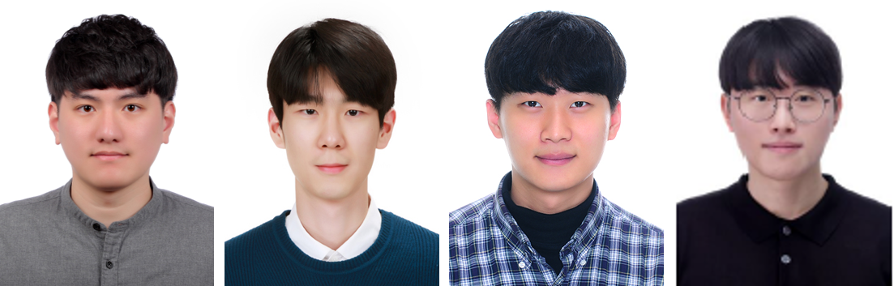

knchoi (at) cau.ac.kr
"An image is worth a thousand words"
Chung-Ang University · School of Computer Science and Engineering
Research on analysis and understanding of features and patterns in images — medical image analysis, object detection, pattern recognition and media-related applications.

우리 대학 재학생들이 한국정보화진흥원(NIA)에서 후원한 K-Fashion AI 경진대회에 참가하여 우수한 성과를 얻었다.
K-Fashion 경진대회는 패션 이미지 내에서 AI 기술을 사용하여 의류분할을 수행하는 경진대회다. 대회 진행기간은 11/2 ~ 11/20이었으며, 소프트웨어학부 최광남교수 지도 하에 중앙대(CAU) 시각영상미디어연구실(VIM)팀은 총 참가팀 349팀 중 최종 4위의 결과를 달성했다.
CAU_VIM팀원은 연구실 대학원생 김찬용, 김효진, 이두희, 차기순 4명으로 구성됐다. · Dec 23, 2020
소프트웨어학부 최광남 교수 지도하에 AI Vision 연구실의 송명근 석사졸업생(삼육대 영문학 전공/복수전공: 컴퓨터공학,
중앙대 대학원 컴퓨터공학과 2024.2 졸업)이 "Denosing Diffusion-based Image Generation Model using Principal Component Analysis" 논문의 제1저자로 IEEE Access 저널에 출판되었다. · Nov, 18, 2024
소프트웨어학부 최광남 교수 지도하에 AI Vision 연구실의 김태양 석사졸업생(삼육대 컴퓨터공학 2021.2 졸업, 중앙대 대학원 컴퓨터공학과 2023.2 졸업)이 비전 트랜스포머를 활용한 새로운 객체 탐지 방법을 제안한 "One-stage Detection Model based on Swin Transformer" 논문의 제1저자로
IEEE Access 저널에 Publish(출판)됐다. · May 22, 2024
(2022.11)소프트웨어학부 최광남 교수 지도하에 AI Vision 연구실 학부연구생(기간: 2022.7 - 2022.10)
조진형 학생(소프트웨어학부, 2학년)이 아래와 같이 특허를 출원하였다.
심폐소생술 실습 시스템
"CARDIOPULMONARY RESUSCITATION PRACTICE SYSTEM"
<특허출원 번호>
10-2022-0155603(조진형) · Nov 18, 2022
시각영상미디어연구실 김효진 석사 졸업생(대진대 컴퓨터공학 2019.2 졸업, 중앙대 대학원 컴퓨터공학과 2021.2 졸업)이 NAVER SNOW에 입사하였다. · Sep 28, 2021
(2021.03)소프트웨어학부 최광남교수님의 지도하에 시각영상미디어연구실(VIM)팀의 학부연구생(기간: 2020.1 - 2020.11)
양소연, 이서현 학생이 아래와 같이 특허 3편을 출원하였다.
혼합 현실을 이용한 가상 화재 대응 교육 평가 시스템 및 방법
"Virtual Fire Response Education Evaluation System and Method using Mixed Reality"
<특허출원 번호>
10-2021-0017108 (양소연, 이서현)
10-2021-0017110 (양소연, 이서현)
10-2021-0017111 (이서현, 양소연) · Mar 05, 2021
시각영상미디어연구실 석사과정 김효진 학생(대진대 컴퓨터공학 2019.2 졸업 , 중앙대학교 컴퓨터공학과 2021.2 졸업예정)이 NAVER에서 주관하는 취업 연계형 교육프로그램 boostcamp AI tech 에 합격하였다. · Jan 29, 2021
소프트웨어학부 최광남교수 지도 하에 시각영상미디어연구실 석사과정 김효진 학생이 딥러닝을 이용한 패션 이미지 분석기를 제안한 "Multiple-Clothing Detection and Fashion Landmark Estimation using a Single-Stage Detector" 논문의 제1저자로 IEEE Access 저널에 Accepted(출판 승인)됐다. · Jan 07, 2021
The main goal is to research on analysis and understanding of features and patterns in images. Main topics include medical image analysis, object detection, pattern recognition and media-related applications.
CAU is established in 1918, since then, it has taken a leading role in nurturing intellectuals of the nation. Respected as leading institution providing quality education, CAU has sped up the pace of innovation in education at internation level.
The main goal of the school is to develop an ability to solve engineering problems in computer related research and industry, based on the knowledge of fundamental and practical aspects of computer science.